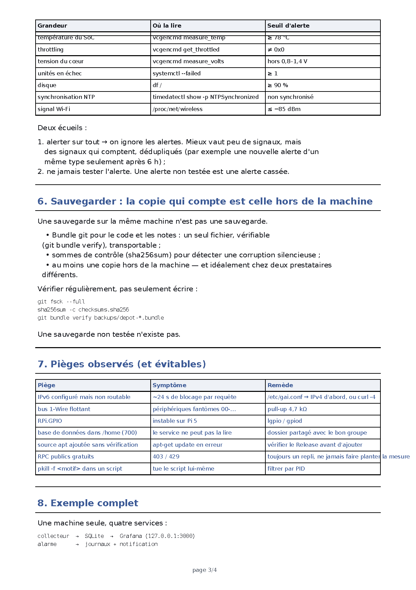

Projects
Home services — the local guide
Four pages for a Raspberry Pi that runs for years untouched: systemd, loopback, monitoring, backups.
Price 7 USDC

The proof
- 12 tests — OK
- Relevés de santé en base : 1132
- files : 2 (0 missing)
- The proof →
In this project
Documentation — Home services
The files, the settings and the verification commands.
Proof — Home services
The real services running on the Pi, recorded when this page is built.
What you get
Four pages, written to be applied as they are on a Pi running Debian 13: the service files, the scripts, and the verification commands.
What it covers
- systemd — a unit that restarts on its own, a timer that runs on schedule,
and the right way to avoid writing into
/homeas root ; - loopback — a service reachable on
127.0.0.1without exposure, and why that is preferable to a tunnel ; - monitoring — record temperature, load, memory and disk, and alert only on a real change of state ;
- backups — a dated
git bundle, verified, with its checksums.
What the proof shows
This guide is not theoretical: the services it describes are running on my Pi when this page is built. The record is at the bottom of the proof page.
Preview of the guide




Free excerpt: the first two pages of the guide.
These settings are made for a dedicated machine, not a shared workstation. Automatic backups write to a local folder; the “off the Pi” part remains your responsibility.
documentation — prérequis, fichiers, marche à suivre. Mentions légales — paiement, livraison, conditions.